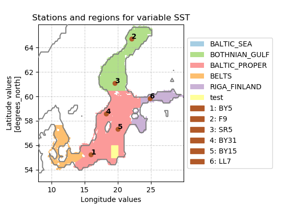

Validation report for ‘MOM5_Baltic’
Contents
Validation report for ‘MOM5_Baltic’¶
General information¶
Created at: |
|
Created for output directory: |
|
|
|
Start date: |
|
End date: |
|
User: |
|
Report description¶
This is an example for the post-processing configuration.
Performed tasks¶
Two-dimensional seasonal means¶
This task generates figures containing two-dimensional seasonal means \(\langle \phi \rangle_S(x,y)\) for a season \(s\) and a three-dimensional variable \(\phi(x,y,t)\), i.e.$\( \langle \phi \rangle_S(x,y) = \frac{1}{N_S} \sum_{t\in S} \phi(x,y,t), \)\(where \)t\( are all time steps that are contained in season \)S\(. The number of these time steps is given by \)N_S$, where the considered time period is from 19590101 to 19590110.
Two-dimensional seasonal anomalies¶
This task generates figures containing two-dimensional seasonal anomalies \(\langle \Delta \phi \rangle_S(x,y)\) for a season \(s\), a three-dimensional variable \(\phi(x,y,t)\) and a three-dimensional reference field \(\phi_{\mathrm{ref}}(x,y,t)\) i.e.$\( \langle \Delta \phi \rangle_S(x,y) = \frac{1}{N_S} \sum_{t\in S} \phi(x,y,t) - \phi_{\mathrm{ref}}(x,y,t) = \langle \phi \rangle_S(x,y) - \langle \phi_{\mathrm{ref}} \rangle_S(x,y) , \)\(where \)t\( are all time steps that are contained in season \)S\(. The number of these time steps is given by \)N_S$, where the considered time period is from 19590101 to 19590110.
Stations and Regions¶
This task generates an image with the configured staitons and regions for which time series data is generated.For regions the time series is generated as the spatial mean over this region.Whereas for stations a remapping to the nearest neighboring grid cell is performed.
Time series¶
This task generates figures of temporal means according to the configured time-series operators, e.g. if you specfied time_series_operators = ["-monmean"], a plot with monthly means is generated.Please refer to the cdo documentation for more information on these operators.If there are more than 100 samples in the time series and it is compared to reference data, a scatter plot is generated, where the \(x\) and \(y\) coordinates correspond to the reference samples and the model ones, respectively.
Taylor Diagrams¶
Taylor diagrams graphically indicate which of several model data represents best a given reference data.In order to quantify the degree of correspondence between the modeled and observed behavior in terms of three statistics:the Pearson correlation coefficient, the root-mean-square error (RMSE) error, and the standard deviation.Here both data, model and reference, consist of the same number of samples that correspond to a time series starting from 19590101 and ending at 19590110.
Cost functions¶
The cost function \(c\) as it is defined here, further summarizes the information given in a Taylor diagram.It measures the root means square error \(\epsilon = \sqrt{\frac{1}{N}\sum_{t=t_1}^{t_{N}} (\phi(t)-\phi_{\mathrm{ref}}(t))^2}\) of the model data \(\phi(t)\)in units of the standard deviation \(\sigma_{\mathrm{ref}}\) of reference data \(\phi_{\mathrm{ref}}(t)\), i.e.$\( c = \epsilon / \sigma_{\mathrm{ref}}. \)\(Both data consist of \)N\( samples corresponding to a time series starting from \)t_1\( and ending at \)t_N$.
Vertical profiles¶
This task generates vertical profiles of a four-dimensional field \(\phi(x, y, z, t)\) at configured stations (using remapping to nearest neighbors) accompanied by performing the configured seasonal means.Vertical profiles that correspong to regions are created by an additional spatial mean over the particular region.
Results¶
Sea surface temperature (SST)¶
Analysis
Description¶
This parameter is the temperature of sea water near the surface measured in degrees Celsius. The corresponding model output variable is called SST.
Reference description¶
Reference is taken from https://cds.climate.copernicus.eu/cdsapp#!/dataset/reanalysis-era5-single-levels-monthly-means. Search for “Sea surface temperature”
Postprocess settings for variable sea surface temperature (SST)
Go to settings ->
stations¶
{'BY5': {'lat': '55.25', 'lon': '15.98', 'alternative-names': ['BornholmdeepBY5']}, 'F9': {'lat': '64.71', 'lon': '22.07', 'alternative-names': ['BothnianBayF9']}, 'SR5': {'lat': '61.08', 'lon': '19.58', 'alternative-names': ['BothnianSeaSR5']}, 'BY31': {'lat': '58.58', 'lon': '18.23', 'alternative-names': ['LandsortDeepBY31']}, 'BY15': {'lat': '57.3333', 'lon': '20.05', 'alternative-names': ['GotlanddeepBY15']}, 'LL7': {'lat': '59.8465', 'lon': '24.8378', 'alternative-names': ['GulfFinlandLL7']}}
regions¶
{'BALTIC_SEA': {'maskfile': '/scratch/usr/mvkkarst/test_area/hlrng_example/postprocess/MOM5/create_validation_report/../../../reference/masks/Baltic/BALTIC_SEA.nc'}, 'BOTHNIAN_GULF': {'maskfile': '/scratch/usr/mvkkarst/test_area/hlrng_example/postprocess/MOM5/create_validation_report/../../../reference/masks/Baltic/BOTHNIAN_GULF.nc'}, 'BALTIC_PROPER': {'maskfile': '/scratch/usr/mvkkarst/test_area/hlrng_example/postprocess/MOM5/create_validation_report/../../../reference/masks/Baltic/BALTIC_PROPER.nc'}, 'BELTS': {'maskfile': '/scratch/usr/mvkkarst/test_area/hlrng_example/postprocess/MOM5/create_validation_report/../../../reference/masks/Baltic/BELTS.nc'}, 'RIGA_FINLAND': {'maskfile': '/scratch/usr/mvkkarst/test_area/hlrng_example/postprocess/MOM5/create_validation_report/../../../reference/masks/Baltic/RIGA_FINLAND.nc'}, 'test': {'lat-min': '55.0', 'lat-max': '56.0', 'lon-min': '19.0', 'lon-max': '20.0'}}
plot-config¶
{'min_value': 0.0, 'max_value': 15.0, 'delta_value': 1.0, 'contour': True, 'color_map': 'rainbow'}
reference-description¶
Reference is taken from https://cds.climate.copernicus.eu/cdsapp#!/dataset/reanalysis-era5-single-levels-monthly-means. Search for "Sea surface temperature"
plot-config-anomaly¶
{'min_value': -5.0, 'max_value': 5.0, 'delta_value': 1.0, 'contour': True, 'color_map': 'seismic'}
description¶
This parameter is the temperature of sea water near the surface measured in degrees Celsius. The corresponding model output variable is called SST.
Two-dimensional seasonal means¶
Figures
Go to notebook ->
\(\vphantom{M}\)

Two-dimensional seasonal anomalies¶
Figures
Go to notebook ->
\(\vphantom{M}\)

Stations and Regions¶
Figures
Go to notebook ->
\(\vphantom{M}\)

Time series¶
Figures
Go to notebook ->
\(\vphantom{M}\)

\(\vphantom{M}\)

Taylor Diagrams¶
Figures
Go to notebook ->
\(\vphantom{M}\)

\(\vphantom{M}\)

Cost functions¶
Figures
Go to notebook ->
\(\vphantom{M}\)

\(\vphantom{M}\)